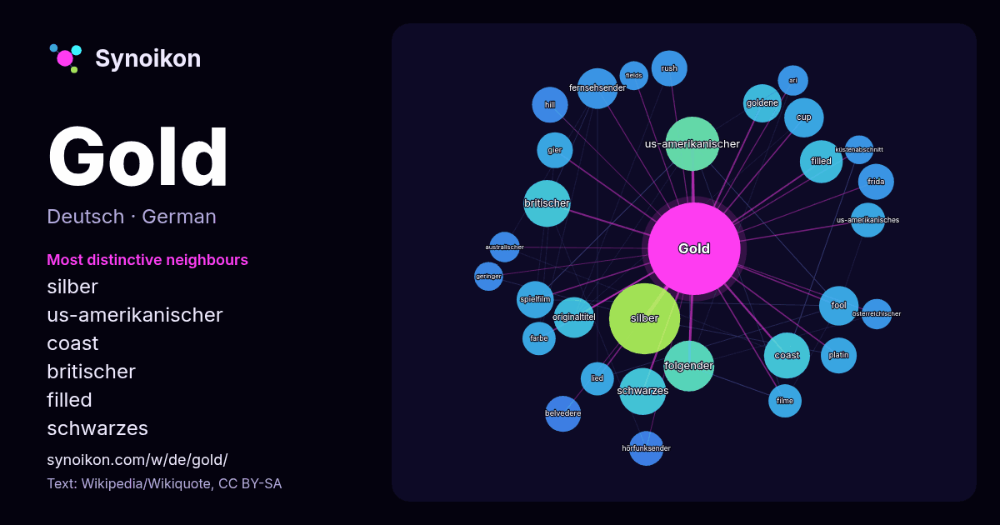

Deutsch · Liste der Wörter des Tages
Gold
“gold” · Die Wörter in seinem Umfeld aus 960 Vorkommen in Wikipedia, Wikiquote.

Typischste Nachbarn
- silber 48×
- us-amerikanischer 23×
- coast 23×
- britischer 21×
- filled 21×
- schwarzes 21×
- fernsehsender 18×
- fool 18×
- originaltitel 18×
- goldene 15×
- folgender 15×
- gier 15×
- frida 15×
- belvedere 15×
- rush 15×
- platin 15×
- spielfilm 15×
- cup 14×
- hörfunksender 14×
- hill 13×
× = wie viel häufiger als in allgemeinem Wikipedia-Text.
Häufigste Nachbarn
- silber 55
- us-amerikanischer 32
- folgender 28
- britischer 24
- schwarzes 24
- coast 23
- filled 20
- deutsche 19
- fernsehsender 18
- originaltitel 18
- cup 17
- deutscher 17
- fool 17
- goldene 16
- personen 16
- spielfilm 15
- titel 15
- belvedere 14
- frida 14
- gier 14
Im Kontext
- Gold (mittelhochdeutsch golt; bereits althochdeutsch auch gold, zu einer indogermanischen Wurzel *ghel- ‚gelb‘) ist ein chemisches Element mit dem Elementsymbol Wikipedia snippets · Gold
- Gold steht für: Gold, Edelmetall und chemisches Element Gold (Familienname), Familienname, zu Namensträgern siehe dort Gold (Farbe), warmer Gelbton Gold Wikipedia snippets · Gold (Begriffsklärung)
- Das Gold (The Gold) ist eine Dramaserie von Neil Forsyth, die den Brink's-Mat-Überfall, der in London am 26. November 1983 geschah, und die folgenden Ermittlun … Wikipedia snippets · Das Gold
- Fool’s Gold (englisch: Narrengold) ist: Filme: Fool’s Gold (1919), US-amerikanischer Stummfilm von Laurence Trimble (1919) Fool’s Gold (1946), US-amerikanischer Wikipedia snippets · Fool’s Gold
- Marian Gold (* 26. Mai 1954 in Herford als Hartwig Schierbaum) ist ein deutscher Musiker. Er wurde in den 1980er Jahren als Sänger der von ihm mitgegründeten Wikipedia snippets · Marian Gold
- Schwarzes Gold steht für: Schwarzes Gold, Synonym für schwarze Stoffe, die wegen ihrer Kostbarkeit „Gold“ im Sinne von etwas Wertvollem genannt werden Wikipedia snippets · Schwarzes Gold
- Die Gold Wing ist ein schweres Reisemotorrad mit wassergekühltem Vier- oder Sechszylinder-Boxermotor und Kardanantrieb von Honda. Das erste Modell GL 1000 Wikipedia snippets · Honda Gold Wing
- Eine Goldene Schallplatte (abgekürzt „Gold“) ist in der Musikindustrie ein Preis, der an Musiker, Produzenten und Komponisten für den Verkauf einer Mindestanzahl Wikipedia snippets · Goldene Schallplatte
Weitere Wörter
- Arbeit
- Brücke
- Essen
- Familie
- Geld
- Geschichte
- Gesundheit
- Gott
- Kunst
- Leben
- Macht
- Natur
- Tod
- Wahrheit
- Wasser
- Wissenschaft
- Zug
Vorberechnet am 2026-10-09 mit Standardeinstellungen (±5 Wörter, mittlerer Korpus). Die interaktive Karte kann mit Live-Daten aktualisieren.
Maschinell übersetzte Oberfläche; Korrekturen willkommen.